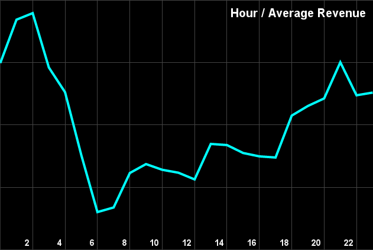
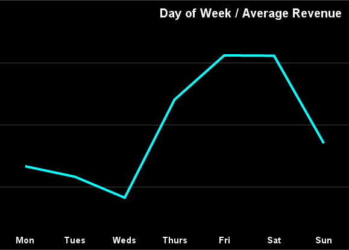
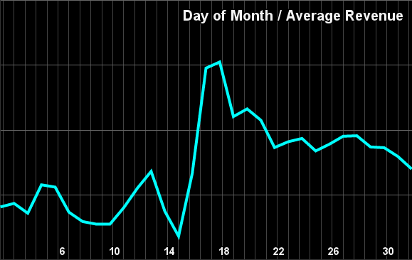
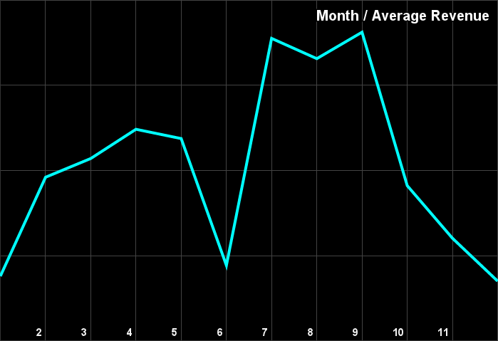
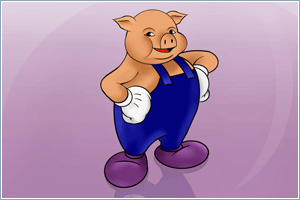
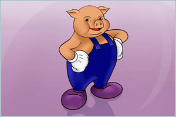
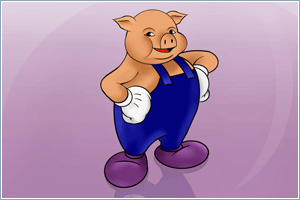

hackNY 2012 Summer Presentation
Sophie Chou
What does Intent Media do?
Most people who search for flights and hotels don't actually buy anything (only ~3-5% do!)publishers like Expedia and Orbitz look towards advertising to increase revenue.
think Google AdWords for travel sites
The Challenge
How can a publisher gain media revenue from showing ads without sacrificing transaction revenue from selling products (airplane tickets, hotels, etc.)?If a site shows ads from its competitors, it could potentially lose more revenue than it gains from advertisements!
Intent Media uses machine learning techniques to help mitigate that risk.
A Picture
Our Basic Model
$$Y_i = \beta_0 + \beta_1X_{i,1} + .... + \beta_PX_{i,P} + \epsilon_i$$- We have a set of input signals or characteristics about users
- From these signals we can model or predict either transaction (purchase) or media (advertisement) revenue
- We use a linear regression to do so.
Seasonality
What is Seasonality?
Trends in revenue that are related to intervals in timeFor example, the hour of day, day of week, or month of year.
We can observe many such trends in our data!
Average Revenue vs. Hour
Average Revenue vs. Weekday
Average Revenue vs. Day of Month
Average Revenue vs. Month
The Seasonality Problem
- Trying to fit a linear regression to data that has seasonality can lead to large errors.
- If we can first model these seasonalities and remove or demean the dataset, then we can do a better job of modeling our original regression.
- In other words: remove predictability from the data to focus on the less predictable parts.
The Seasonality Model
using a linear regression, $$y = \beta_0 + \beta_1x_1 + ... + \beta_jx_j$$ we want to generate the revenue $y$ based on signals $x_1 ... x_j$,where each variable represents a time interval.
The Seasonality Model, con't
Let's use the average revenue of all the data points we have for a certain interval as a predictor for future revenue.That means that the $\beta$ values will simply be the average of each time interval!
$x_1 ... x_j$ will be either 0 or 1 (booleans) depending on whether we are looking at that time interval or not.
Example: Weekday Seasonality
$$y = \beta_0 + \beta_1x_1 + \beta_2x_2 + \beta_3x_3 + \beta_4x_4 + \beta_5x_5 + \beta_6x_6 $$ $y$ is the publisher revenue$x_1$...$x_6$ are the variables Monday through Saturday (either 0 or 1 depending on what day of the week it is; Sunday is the intercept)
$\beta_0$...$\beta_6$ are the average values of the revenue on Sunday-Monday, respectively.
Downweighting
But what if we had two or more weeks of data? We want the value of $\beta$ to be cumulative, but don't want the data from 6 months ago to be worth the same as yesterday's data!Data that is more recent is likely to be a better predictor for the revenue.
con't...
introduce the variable $\gamma$ (where $\gamma \le 1 $) to downweight older data.Let's say we had $n$ weeks of data. Then, we'll multiply the $i^{th}$ week's data by $\gamma^{i-n}$, where i = 1, 2, ..., n.
That means the most recent data has downweight $\gamma^0$, or no downweighting at all, whereas the first week will be downweighted by a multiple of $\gamma^{n-1}$, yielding a much smaller product.
Ex: if $\gamma$ = 0.5, then multiply this week's data by $0.5^0$ or 1, multiply last week's data by $0.5^1$ or $1/2$, multiply the previous week's data by $0.5^2$ or $1/4$, and so on...
Implementation
Linear Algebra
since we train our data incrementally, we want a way to easily accumulate and calculate our values.
this is more easily done using matrix manipulation, and provides a generic framework.
Weekday Example, again
Let's say we only have one week's worth of data. Then, $$x = \begin{bmatrix}Sunday\\Monday\\Monday\\Tuesday\\Tuesday\\Tuesday\\Wednesday\\Thursday\\Friday\\Friday\\Saturday\end{bmatrix} = \begin{bmatrix}1 & 0 & 0 & 0 & 0 & 0 & 0\\1 & 1 & 0 & 0 & 0 & 0 & 0\\1 & 1 & 0 & 0 & 0 & 0 & 0\\1 & 0 & 1 & 0 & 0 & 0 & 0\\1 & 0 & 1 & 0 & 0 & 0 & 0\\1 & 0 & 1 & 0 & 0 & 0 & 0\\1 & 0 & 0 & 1 & 0 & 0 & 0\\1 & 0 & 0 & 0 & 1 & 0 & 0\\1 & 0 & 0 & 0 & 0 & 1 & 0\\1 & 0 & 0 & 0 & 0 & 1 & 0\\1 & 0 & 0 & 0 & 0 & 0 & 1\end{bmatrix} y = \begin{bmatrix} $_{Sun} \\ $_{Mon} \\ \ $_{Mon} \\ $_{Tues} \\ $_{Tues} \\ $_{Tues} \\$_{Weds} \\ $_{Thurs} \\ $_{Fri} \\ $_{Fri} \\ $_{Sat} \end{bmatrix} = \begin{bmatrix} 0.0 \\ 0.5 \\ 0.5 \\1.0 \\ 1.5 \\ 1.5 \\ 0.0 \\ 0.5 \\ 1.0 \\ 0.5 \\ 1.0 \end{bmatrix}$$ The repetition of days means that several transactions occurred on that day. This is a simplified example: In reality, there would be many, many values per day, of course! (y-values hypothetical)con't...
$$\beta = (X^{\top}X)^{-1}X^{\top}Y$$ $$\beta = \begin{bmatrix} \beta_{Sun} \\ \beta_{Mon} \\ \beta_{Tues} \\ \beta_{Weds} \\ \beta_{Thurs} \\ \beta_{Fri} \\ \beta_{Sat} \end{bmatrix} = \begin{bmatrix} 0.00 \\ 0.50 \\ 1.33 \\ 0.00 \\ 0.50 \\ 0.75 \\ 1.00 \end{bmatrix} $$ Which is indeed the average revenue per ad call on a given day!Cumulative Betas
Let's say, for example, we have 3 weeks of data, and we set $\gamma = 0.5$ (in other words, each week is worth half as much the further back you go in time).$$\beta_1 = (X_1^{\top}X_1)^{-1}(X_1^{\top}Y_1)$$ $$\beta_2 = (0.5*X_1^{\top}X_1 + X_2^{\top}X_2)^{-1}(0.5*X_1^{\top}Y_1 + X_2^{\top}Y_2)$$ $$\beta_3 = (0.25*X_1^{\top}X_1 + 0.5*X_2^{\top}X_2 + X_3^{\top}X_3)^{-1}(0.25*X_1^{\top}Y_1 + 0.5*X_2^{\top}Y_2 + X_3^{\top}Y_2)$$
Technology
 +
+
 +

+
+

+

+

+